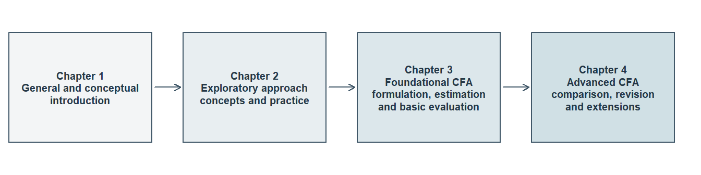

Part Two: Factor Analysis and Structural Equation Modeling
What Part Two Is and Who It Is For
Part Two of Quantitative Methods for Social and Behavioral Research is about latent-variable modeling. The methods of Part One worked with variables that were recorded: a test score, a count, a group label. Here the variable of primary interest is one that no column of the data set holds. Twelve questionnaire items are recorded; the planning, the learning strategies and the sense of belonging those items are meant to register are not. Part Two asks what follows from taking that situation seriously, and answers through factor analysis: how observed responses represent latent variables, and how a measurement model is developed, specified, estimated, evaluated and extended.
It is written for postgraduate students and applied researchers who have read Part One or who already command the statistics it develops: variable form, variance, covariance and correlation; estimates, sampling uncertainty, intervals and tests, with the limits of a dichotomous decision; regression equations, residuals and conditional comparisons; nested model comparison and penalized in-sample criteria; held-out evidence; and reproducible work in R. Part One’s argument-based reading of a study is useful background rather than a prerequisite.
The first four chapters form the measurement foundation. Chapter 1, From Latent-Variable Modeling to Factor Analysis, is the general and conceptual presentation. Chapter 2, Exploratory Factor Analysis and Model Development, is the exploratory approach, conceptual and practical. Chapter 3, Specifying and Estimating Confirmatory Factor Models, is the foundational confirmatory approach, covering the general model, specification, identification, estimation and basic global and local evaluation. Chapter 4, Evaluating and Comparing Confirmatory Factor Models, develops comparison, revision, independent validation and the higher-order and bifactor extensions. The chapters after them carry the structural half of the subject, from relations between factors and indicators to relations among variables in a structural system; the last section here says what they cover and what they cannot confer.
Part Two asks for more mathematics than Part One did. Readers manipulate equations, count the moments a covariance matrix supplies against the parameters a model spends, and work with small vectors and matrices: a matrix product, a transpose, a symmetric matrix, a diagonal matrix. No previous course in factor algebra or matrix calculus is assumed; each new operation appears first in a scalar or two-variable case, substantive and graphical meaning comes before notation, and every symbol, index and dimension is defined before it is used. Calculus and proof-based mathematical statistics are not prerequisites, and the longer derivations, identification theorems and asymptotic arguments are placed so that a reader can pass over them without losing a definition, an equation or an assumption the main route needs.
The situation the four chapters share can be put in one sentence and one equation. Several recorded responses vary together, and the attribute used to explain their association is not recorded at all; the common-factor model writes each recorded response as a common part, shared with the other responses through a small number of unobserved variables, plus a residual part that the declared common variables do not represent. For \(p\) indicators and \(m\) factors, with \(\mathbf y_i\) the \(p\times1\) vector of responses recorded for unit \(i\),
\[ \mathbf y_i=\boldsymbol\nu+\boldsymbol\Lambda\boldsymbol\eta_i +\boldsymbol\epsilon_i, \qquad \begin{aligned} \boldsymbol\mu(\boldsymbol\vartheta) &=\boldsymbol\nu+\boldsymbol\Lambda\boldsymbol\alpha,\\ \boldsymbol\Sigma(\boldsymbol\vartheta) &=\boldsymbol\Lambda\boldsymbol\Phi \boldsymbol\Lambda^{\mathsf T}+\boldsymbol\Theta, \end{aligned} \]
with \(E(\boldsymbol\epsilon_i)=\mathbf 0\) and \(\operatorname{Cov}(\boldsymbol\eta_i,\boldsymbol\epsilon_i)=\mathbf 0\). Here \(\boldsymbol\nu\) holds the \(p\) indicator intercepts, \(\boldsymbol\eta_i\) the \(m\) factors for unit \(i\), \(\boldsymbol\Lambda\) the \(p\times m\) loadings that relate the two, and \(\boldsymbol\epsilon_i\) the \(p\) residuals; \(\boldsymbol\alpha\) holds the \(m\) latent intercepts, \(\boldsymbol\Phi\) is the \(m\times m\) factor covariance matrix, \(\boldsymbol\Theta\) the \(p\times p\) residual covariance matrix, and \(\boldsymbol\vartheta\) the complete vector of free parameters. What the model produces is the implied pair: a mean structure \(\boldsymbol\mu(\boldsymbol\vartheta)\) and a covariance structure \(\boldsymbol\Sigma(\boldsymbol\vartheta)\). An analysis working from covariances alone sets the mean structure aside or profiles it out under stated assumptions, which is a choice rather than an absence. One notation serves all four chapters, and it is chosen to survive the move to structural models, so that later chapters extend the model rather than quietly changing what its symbols mean.
The covariance equation is what makes the proposal answerable. Declared loadings, factor relations and residual restrictions imply one particular covariance matrix, and that matrix can be held against the one a sample supplies. The comparison has force because a covariance matrix for \(p\) indicators holds only \(p(p+1)/2\) distinct entries: a model that spends fewer parameters than that makes claims which can fail. That counting is a recurring operation in Part Two, and it is kept separate from the further question of whether those moments determine the parameters at all.
None of this makes a factor identical to the construct that names it. A construct is a substantive idea belonging to the research question, and its meaning comes from theory, item content, response processes, the population studied and the use intended for the results, none of which a covariance matrix supplies. A factor is a random variable inside a statistical model, and an observed or estimated score is neither; the three are never treated as synonyms. The arrow a path diagram draws from a factor to an indicator states the direction of representation the model adopts, writing each response as a function of the factors plus a residual. It is not a finding that the factor produces the response, and it is the wrong direction for a construct whose indicators produce it.
The scope is narrower than the vocabulary might suggest. Part Two models continuous indicators and continuous outcomes; ordered categorical indicators, thresholds, polychoric correlations and ordered-response factor models are signposted where a reader would meet them and are taught elsewhere, and numeric category codes are not automatically continuous measurements. The boundary concerns the indicators rather than every variable in a study: categorical grouping variables and dummy-coded predictors stay in scope, and the later multigroup and MIMIC work uses them alongside continuous indicators. The measurement foundation is the reflective common-factor model with its higher-order and bifactor relatives, estimated by normal-theory maximum likelihood across exploratory and confirmatory work; principal components analysis answers a different question and is not a common-factor estimator. What the family cannot do is as settled as what it can. No factor analysis establishes that a latent entity exists, that a reflective direction is causal, that a scale is valid, or that a structural claim is warranted; higher-order and bifactor models are rival representations of an adequate core model rather than repairs for a weak one; and reliability follows a defined score, model, population and use, so it is not validity and does not mend a weak measurement representation.
How the Chapters Build on One Another
The first four chapters make four connected moves on one covariance equation: represent a common-factor model and derive the moments it implies; explore a development record to settle dimensionality, orientation and interpretation; formulate and evaluate the resulting proposal as explicit restrictions on evidence that played no part in producing it; and compare, revise and extend the fitted model. The equation is the same throughout. What changes at each stage is the responsibility it carries and the evidence it must answer to. Figure 1 sets out that architecture; no chapter redraws it.
Table 1 states what each chapter is responsible for and what it hands to the chapter after it.
| Chapter | Main responsibility | What it hands forward |
|---|---|---|
| 1. From Latent-Variable Modeling to Factor Analysis | Separate an observed variable, a latent random variable, a fixed parameter and a residual, and a factor from the construct that names it; write one two-factor, six-indicator system as scalar equations, matrices, a path diagram and a sentence and check the four against one another; say what a scaling, sign, location or coordinate convention supplies and what it cannot decide; derive \(\boldsymbol\Sigma=\boldsymbol\Lambda\boldsymbol\Phi\boldsymbol\Lambda^{\mathsf T}+\boldsymbol\Theta\); and say what exact reproduction does not establish | The vocabulary the three later chapters use without redefinition, and the known-value six-indicator records on which the algebra is checked before any sample is read |
| 2. Exploratory Factor Analysis and Model Development | Audit indicators, units, coding and missingness before reading a correlation matrix; state which matrix an extraction targets; compare observed eigenvalues with a matched permutation reference and read a structured retention profile across seven rules; count effective parameters and candidate degrees of freedom; transform loadings and factor covariance together and say what rotation preserves; and read pattern coefficients, structure correlations, factor correlations and communalities together, locating discrepancy in a residual matrix rather than an average | A frozen candidate specification with its named rivals, its retained cross-loadings, the retention evidence behind it and an explicit list of unresolved alternatives, settled before any confirmation evidence is inspected |
| 3. Specifying and Estimating Confirmatory Factor Models | State one restricted model as words, equations, parameter matrices and a diagram and check that they agree; separate free, fixed, equality-constrained, bounded and defined entries; set a latent metric by marker or fixed-factor scaling and transform between them; trace a cross-loading and a residual covariance into the moments each changes; count moments, free parameters and degrees of freedom and say why the count is not identification; check convergence, admissibility, gradients and local rank; read estimates with uncertainty, a basic global-fit profile and local residuals; and compare raw-record and derived-summary inputs | A specification and evaluation record: the exact specification and parameter ledger, the active items in order, the moment and degrees-of-freedom audit, the estimator and scaling settings, the convergence and admissibility record, estimates with their uncertainty, the basic global/local evidence and its limits, and the rivals declared in advance |
| 4. Evaluating and Comparing Confirmatory Factor Models | Reconstruct the discrepancy the estimator minimized under a named divisor convention; read the exact-fit test, RMSEA with its interval, CFI, TLI and SRMR as answers to different questions; separate the three residual scales; establish exact nesting, run a compatible difference test and say when AIC and BIC are eligible; specify, count, fit and compare the higher-order and bifactor extensions; read modification indices and expected parameter change as leads that change analytic status; and freeze one revision and evaluate it on untouched records | A calibrated measurement conclusion whose analytic history and unresolved strain stay intact, and the structural question the later chapters take up: which latent variables are endogenous, which directional restrictions enter, and how measurement uncertainty is carried forward |
Using one model family repeatedly does not give every record the same inferential role. Part Two keeps the analysis history visible so that development, first evaluation and independent revalidation are not collapsed into one favorable account. Every decision is inherited, prespecified, a planned sensitivity, or post hoc, always in relation to a named body of evidence, and that status follows the timing and provenance of the decision rather than the name of the function that fitted it: a model developed after inspecting a record is exploratory with respect to that record whatever routine estimates it, and a record made exploratory by revision does not recover confirmatory status because the next command is named after confirmation. The samples are never pooled to manufacture a larger analysis, and availability is not permission to use a record early. Table 2 gives the principal roles.
| Record | First permitted use | What it cannot establish by itself |
|---|---|---|
| Known-value six-indicator records | Chapter 1 reconstructs an implied covariance matrix entrywise from parameters declared in advance | Sampling behavior, an empirical factor count, a unique rotation, a best model, or the existence of the constructs the columns are named after |
| SLE Sample A, 360 cases, development | Chapter 2 audits the indicators, develops the exploratory solution, and freezes the candidate with its named rivals | Independent confirmation of any choice made while Sample A was being inspected |
| SLE Sample B, 360 cases, confirmation | Chapter 3 estimates and gives a basic global/local evaluation of the frozen candidate; Chapter 4 develops comparative evaluation and diagnosis | Independent support for a relation first noticed in Sample B, which stays exploratory until fresh evidence tests it |
| SLE Sample C, 360 cases, revalidation | Chapter 4 evaluates the one revision frozen after Sample B | General validity, measurement invariance, or permission to search Sample C repeatedly for a revision that survives |
| Known SLE generating moments | Chapter 4 discloses them only after the Sample B and Sample C sequence is complete, then computes the population optimum and the population discrepancies directly | Contemporaneous justification for an earlier choice, or a finite-sample conclusion from one realization beyond what the audit separates |
| Separate constructed examples | Chapters 3 and 4 illustrate specified models with declared populations: a six-indicator system and a four-factor higher-order comparison | The development or confirmation status of the SLE sequence, which they never join |
The Student Learning Experiences (SLE) records are a synthetic course case: continuous simulated data, not observations from actual students and not a validated instrument. Three independent samples of 360 complete cases carry twelve indicators – four Planning, four Strategy and four Belonging – drawn from one declared population and distributed together in sle_continuous.csv beside the chapters. Each analysis uses only the sample its role entitles it to, Chapter 1 uses none of them, and the Chapter 2 appendix supplies the codebook, the sample manifest and the generating population, so that every reported value can be reproduced. The retrospective audit that closes Chapter 4 is possible only because that population is known, and it is disclosed only after the Sample B and Sample C sequence has run its course: first the evidence a researcher could actually have had, then the generating structure the candidate omitted. It adds no further sample, no new candidate, no successful revision and no after-the-fact justification for a choice made earlier; its value is that a reader watches a model stay coherent, reproducible and apparently well fitting while still owing a narrower conclusion than its name suggests – which no real study can show.
The stopping points are as deliberate as the moves. Chapter 2 does not relabel a developed pattern as confirmation. Chapter 3 does not treat convergence or admissibility as adequate fit: it proceeds to a basic reading of global and local discrepancy, keeping the limits of that evidence visible. Chapter 4 does not treat favorable fit as construct validation. Each chapter completes one responsibility and transfers a defined record, rather than carrying an unexamined conclusion forward under a new name.
How to Read a Chapter and Use the Concept Reference
Each chapter opens in the same way. A Chapter overview box summarizes the whole chapter in ordinary words: the route, and what a reader will be able to do at the end. The prose that follows it begins from a real measurement problem or concern in an applied study and states the question the chapter answers. Each chapter closes with a numbered Summary and reading bridge that gathers what has been settled and states the questions the next chapter owes. A short Key terms table follows where a chapter carries one, then exercises, then any appendices, which hold derivations, data documentation and extensions the main route does not require. A term is explained where it is first used, and the chapters carry the statistics themselves: a model appears as equations, as parameter matrices, as a path diagram and as an explanation, and every reported number is computed for the reader and read in prose and in named tables. Results are rounded to three decimals from full-precision computation, with trailing zeros dropped (3.1 rather than 3.100), unless a source’s own precision applies. Counts and degrees of freedom stay whole numbers, values shown together share one number of decimals, and a very small probability is shown as a bound, such as below .001, rather than as zero. Chapter 1’s exactly constructed values appear at their natural precision, and a few values carry the digits their purpose needs: a very small numerical check is written in scientific notation, and Chapter 4 shows its reconstructed discrepancy to six decimals and its population discrepancy to seven significant digits, so that the arithmetic can be followed.
The software is named where the methods need it rather than taught as a course of its own. Chapter 1 asks for none: its records are constructed, its results exact, and its conclusions readable without a computer. psych and GPArotation enter with the exploratory work of Chapter 2, and lavaan enters with the confirmatory fits of Chapter 3. A chapter names the software it relies on and states the consequential defaults in words – scale setting, factor covariances, mean structures, missing-data handling, standard errors and the test-statistic family – so that a reader who never opens R can still follow every model, every count and every conclusion from the printed evidence.
Part One’s argument vocabulary is reused rather than redefined, and Part Two does not re-teach the argument-based approach as a recurring apparatus. One optional section of Chapter 1 shows how evidence, justification, interpretation and claim boundaries change when a statistical variable is latent, applies the six quality-evaluation questions under Part One’s names, records at least one failed verdict and repairs the claim; a reader may skip it without losing a definition, an equation, an exercise or a prerequisite for the chapters that follow. Chapters 2 to 4 express prespecification, uncertainty, limitations and claim boundaries in the ordinary technical vocabulary of exploratory and confirmatory factor analysis, and analytic status is the one Part Two term that carries the development, confirmation and replication rules set out above.
The Part Two Concept Reference publishes beside these chapters and holds the single vocabulary these chapters share. Its concept tables gather related terms into broad groups and give each term’s meaning or essential distinction, and a closing table records the notation; each row names the chapter and section where the term is principally explained, so a term met in one chapter can be traced to the place that teaches it. It is written for lookup rather than for reading through: consult it when a term or a symbol is unfamiliar, and return to the chapter for the explanation, the worked example and the reason behind the distinction.
What Comes Later
Chapters 1–4 are available on the website. Chapters 5–12 are not yet available; the following map shows how they extend the measurement foundation.
Chapters 5–12 extend the measurement foundation to research questions about relationships, comparisons, change and the design of a new study. The same principle continues: define what the model represents, show which observed patterns its restrictions imply, and decide what the evidence supports. Each case states its own question, data and assumptions, so a new topic does not depend on remembering an earlier case’s numerical results.
| Chapter | Research question and development |
|---|---|
| 5. Path Analysis and Structural Systems | How do equations and diagrams define an observed-variable system? Known populations and empirical cases connect parameter identification, estimation, fit, constraints and comparison, including recursive and feedback systems. |
| 6. Causal Models, Interventions and Identification | Which intervention or counterfactual question do the data and assumptions identify? Causal assignments, adjustment, Simpson reversals and instruments separate an observed association from a proposed causal answer. |
| 7. Structural Equation Models with Latent Variables | How does a measurement model become part of a structural system? Joint measurement comes first, followed by a full structural refit that retains all indicators and re-estimates both portions. |
| 8. Indirect Effects and Conditional Relationships | How do relationships operate through intermediates or vary with another variable? Indirect effects, latent products, conditional slopes and their intervals keep measurement quality and causal assumptions visible. |
| 9. Measurement Comparability and Group Comparisons | Which comparisons have a common unit and origin? Group means, variances and structural relations require measurement restrictions suited to the intended comparison, including sensitivity to anchors. |
| 10. Incomplete Data and Robust Inference | What information remains when responses are missing or distributions depart from the working model? Incomplete-data likelihood, robust inference, auxiliary information and explicit sensitivity analyses address different problems. |
| 11. Latent Growth Models | What changes over time, and for whom? Growth means, person variation, piecewise and parallel processes, and within-person lagged departures are distinct longitudinal targets. |
| 12. Study Planning and Power Analysis | What should a future study be able to learn? Evidence-calibrated populations, power, interval precision, failures and plausible model departures inform a feasible design. |
Raw records and published summary statistics provide complementary routes. Means, covariances and sample sizes often permit a declared Normal model to be fitted or a published result to be replicated. Raw records additionally support case resampling, factor-score prediction, response-pattern inspection and procedures requiring information beyond the ordinary moments. Matching an estimate across routes does not automatically match every diagnostic or uncertainty calculation.
For a model with several latent variables, the first step fits their measurement system jointly. The second adds the structural relationships, retains the indicators and re-estimates measurement and structural parameters together. Exporting estimated scores and treating them as error-free variables would be a different analysis. Suitable measurement support is also needed before interpreting latent group differences or construct change.
A structural model does not upgrade an associational design to a causal one. Its directional claims require evidence about timing, confounding, assignment and the process that generated the measures. Planning therefore considers whether better measurement or a different design is needed, as well as whether more participants would improve precision. Multilevel modeling belongs to Part Three; categorical measurement and item-response models, mixture models and Bayesian SEM lie outside this Part Two sequence.